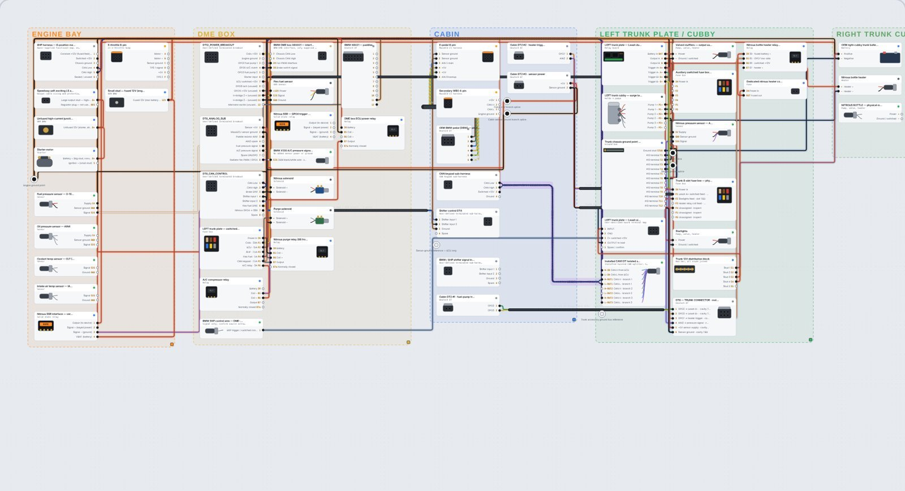
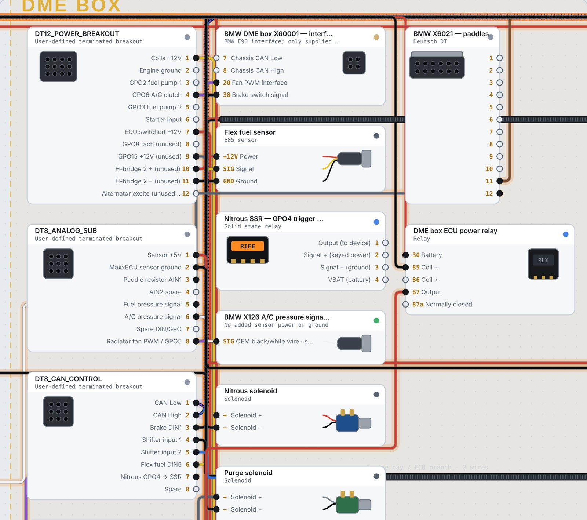

Draw connectors and wires pin to pin, route them clean, build looms, catch bad connections, and export a cut list your whole build can work from. Runs in your browser. No account.

Everything you need to go from a pile of connectors to a documented build.
Tap a pin, tap another, done. Wires route with clean 90° turns in their own lanes and steer around parts. Switch to curved wires any time.
Group wires into a loom and see them run into a ribbed tube. CAN pairs braid around each other. Shift-click to select several wires at once.
It follows every joined pin through splices, bulkheads and buses, then flags things like 12V into ground, sensor ground tied to power ground, wrong gauge for a connector, or an over-rated relay.
Deutsch DT 2 to 12-way, Molex, Maven round bulkheads, relays, Leash relay boards, fuse boxes, power blocks, ground buses, splices and sensors. Build your own.
Group parts into engine bay, DME box, cabin and trunk. Drag and resize the zones to match your car.
Select wires between two parts and drop in a matching DT plug and receptacle. Names, gauge, color and loom carry through.
Wires leave the pin straight, turn at right angles and stay out of the way of other parts. Parallel wires between the same two parts run side by side so you can follow each one.
Wire colors, stripes, gauge and signal names show on the drawing. Wires that pass through a bulkhead or splice keep their name.

Three steps from nothing to a build sheet.
Pick connectors, relays, fuse boxes and sensors from the library, or load the E90 example to see a full build.
Tap pin to pin. Set gauge and color, group wires into looms, twist pairs, and fix anything the checks flag.
Download the Excel workbook, CSV lists, JSON backup or a print-ready diagram and take it to the bench.
Short answers to the things you will do most.
Open the app and go to Harness Designer. Press Load E90 on the Dashboard to see a complete example, or Clear drawing to start blank. Press Add part to bring in connectors.
Select a wire (or several with Shift) and press Make sub-harness plug. The wires between those two parts are split through a new DT plug and receptacle pair sized to the wire count.
The Checks tab lists every problem with the pins involved. Bad wires are marked with a red dashed glow on the drawing, and a warning pops up when you make one. It looks for:
Your drawing saves in this browser automatically. Use Backup to download a JSON file you can keep or load on another computer. You can also save named designs, such as "Current build" and "Bulkhead rebuild", and switch between them.
Press Export Excel workbook on the Wire list, Cut list or Backup tab. You get one .xlsx file that opens in Excel, Google Sheets, Numbers and LibreOffice.
| Sheet | What is in it |
|---|---|
| Summary | Version, date, part, wire and loom counts |
| Wire list | Signal, from, to, gauge, color, length |
| Cut list | Same wires with cut lengths |
| Pinouts | Every used pin on every part and where it goes |
| Parts | Bill of materials with quantities |
The same lists are available as CSV, the whole drawing as SVG, and a print-ready diagram.
WireForge is a planning and documentation tool. It does not certify a harness.
Check connector pinouts, cavity numbers, wire gauge, fuse sizes and current against the manufacturer's data before you build. The compatibility checks catch common mistakes, not every one. Pins with no known function (generic connectors) are not checked. Parts of the included E90 example are marked TBD or verify until they are confirmed on the car. Drawings are stored in your browser, so download a backup before clearing browser data.